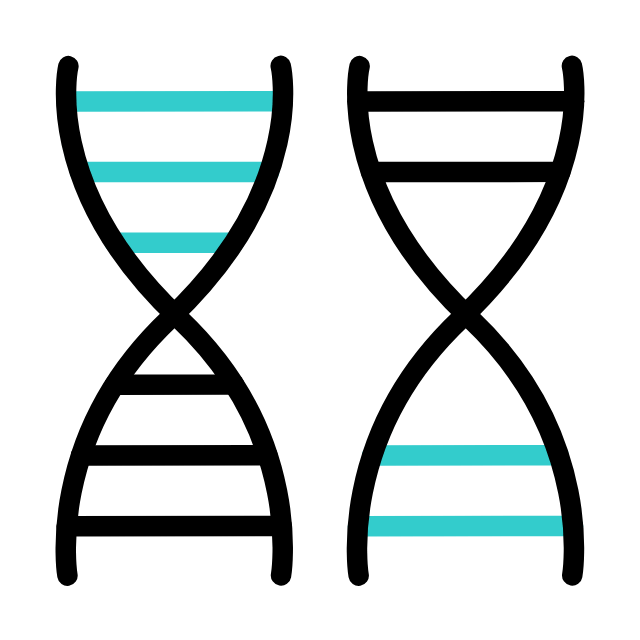

Education
Software Engineering Immersive

General Assembly, Singapore
(2022)
Skills: JavaScript, React JS, Next.js, Node/ Express, MongoDB, PostgreSQL, TailwindCSS, BootStrap
Completed a 3-month full-time bootcamp in full-stack web
development.
Produced 4 portfolio projects, 2 of them as full-stack apps and 2 as
frontend-only apps.

Diploma in Marketing

PACE Academy,
Singapore Polytechnic
(2018-2019)
Completed a 1-year part-time diploma in Marketing (with focus on
Digital Marketing).
Graduated with straight As.
Bachelor's Degree
(Biomedical Science)

Hons. 2nd Upper
Nanyang Technological University
2011-2016
Graduated with a focus on studying bioactive ingredients in folk
herbal remedies. Completed a study on the
Pereskia bleo plant over 2 stages, focusing on the
anti-cancer and rehabilitative properties of the plant as a
consummable herb.
Attained A+ for my Final Year Project.